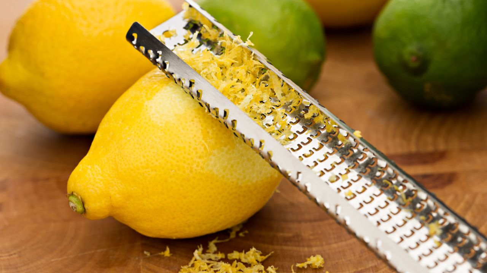
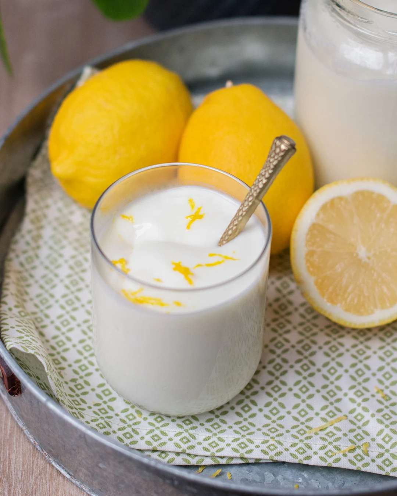
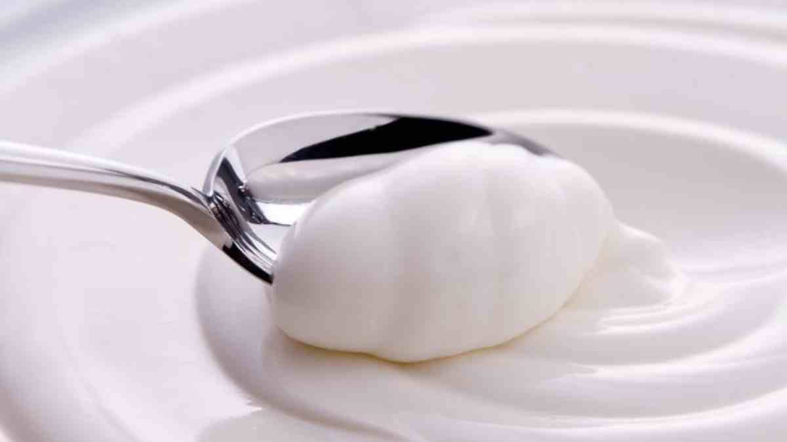

Primer plato: Ensalada Cesar
Índice de Contenidos
Ingredientes
- Yogurt Griego
- Limon
- Azúcar
Paso a paso
- Añadimos 1 Yogurt griego en un bol

- Cogemos un rallador y 1/2 limón le rallamos la piel sonre el yogurt añadido anteriormente

- Removemos un poco para que se integren las pieles con el yogurt

- Agregamos 1 cucharada (al gusto) de azucar
- Volvemos a remover para que esta vez se integre el azucar

- Una vez revuelto, cogemos 1 rodaja de limon, y lo añadimos de decoración al vaso
Resultado final